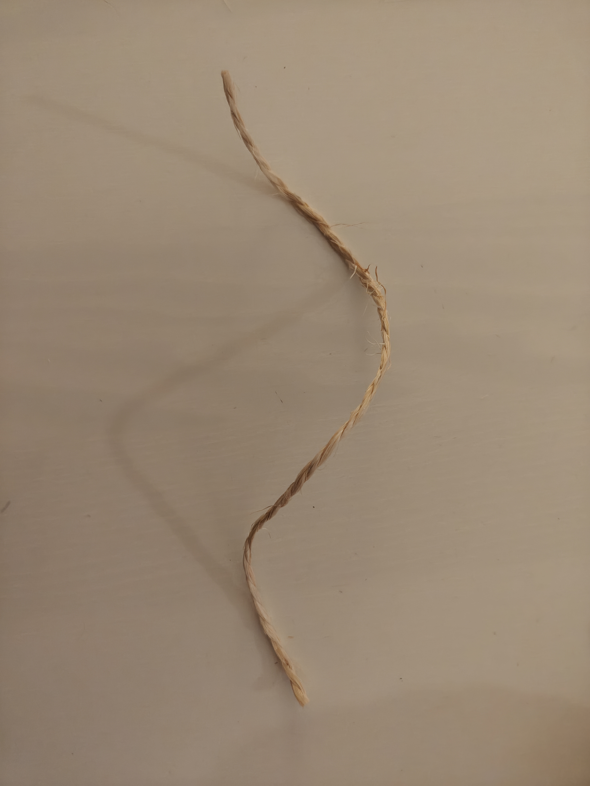
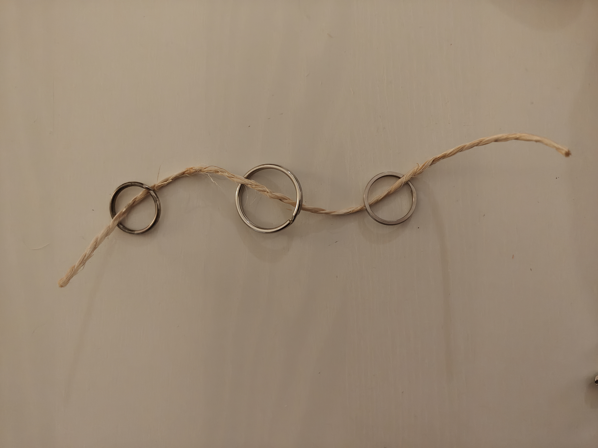
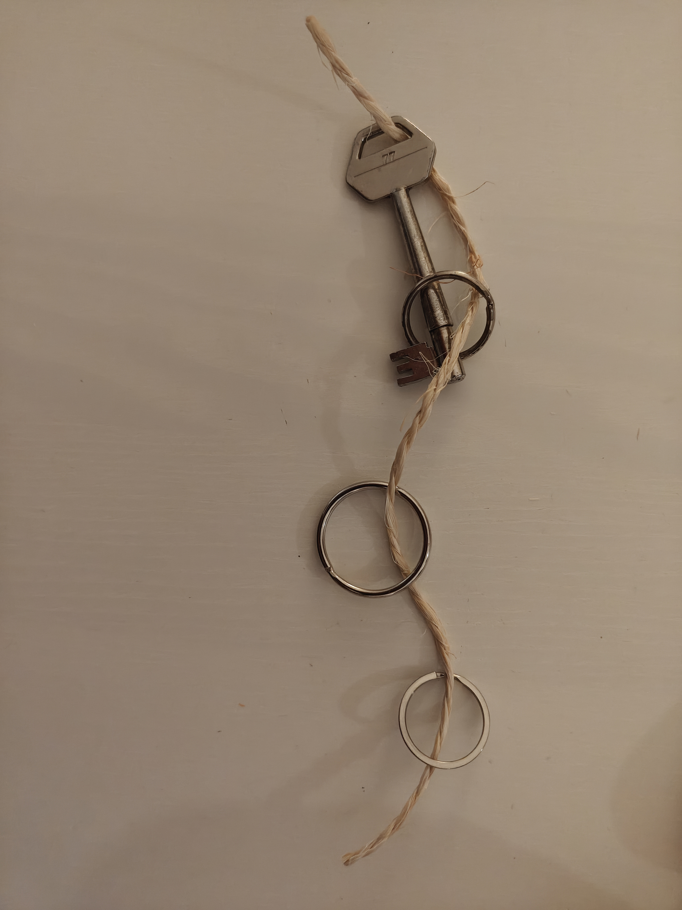
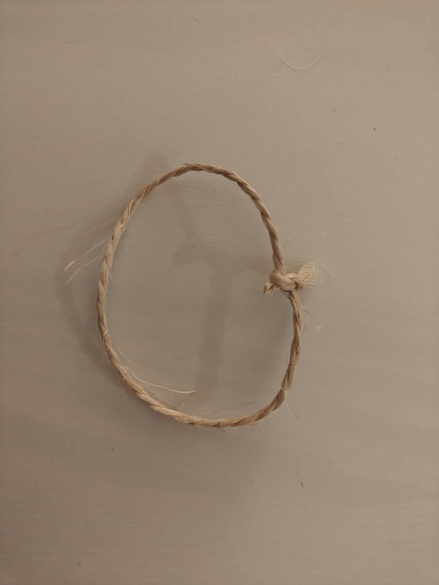
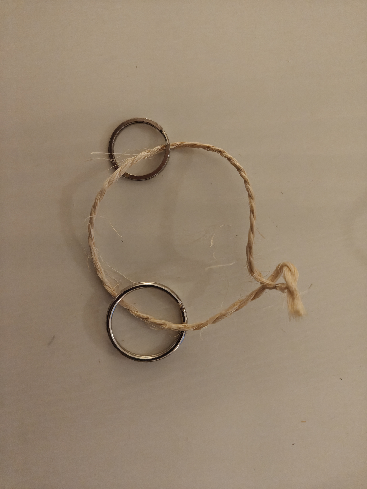
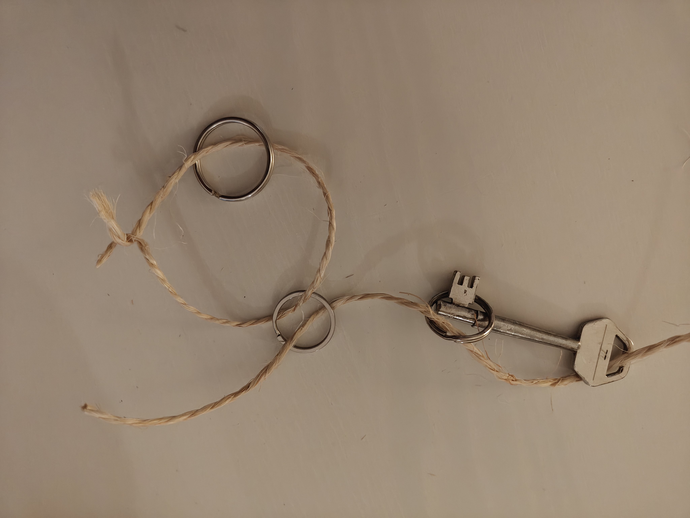
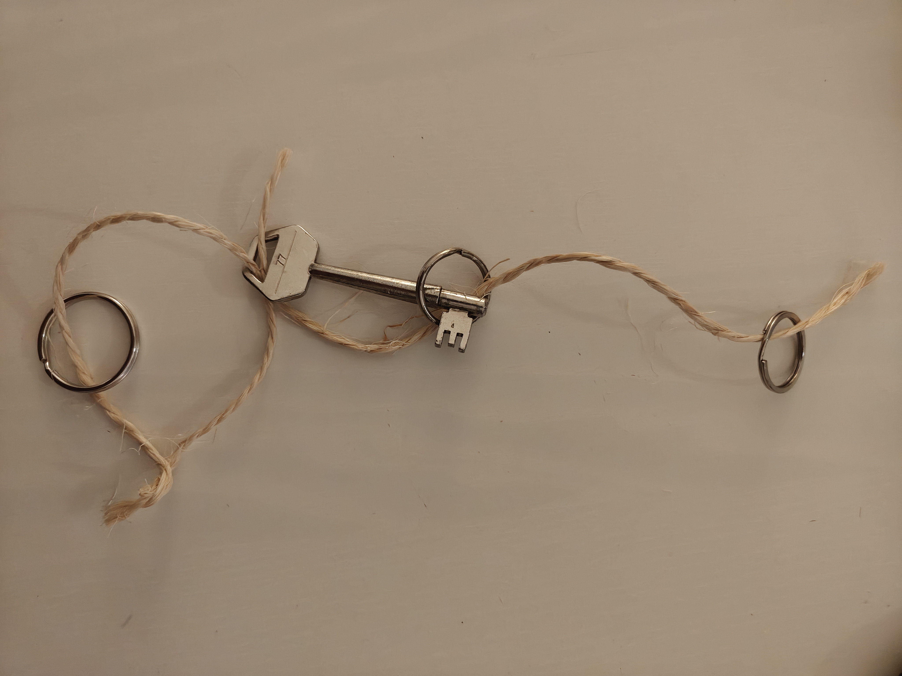
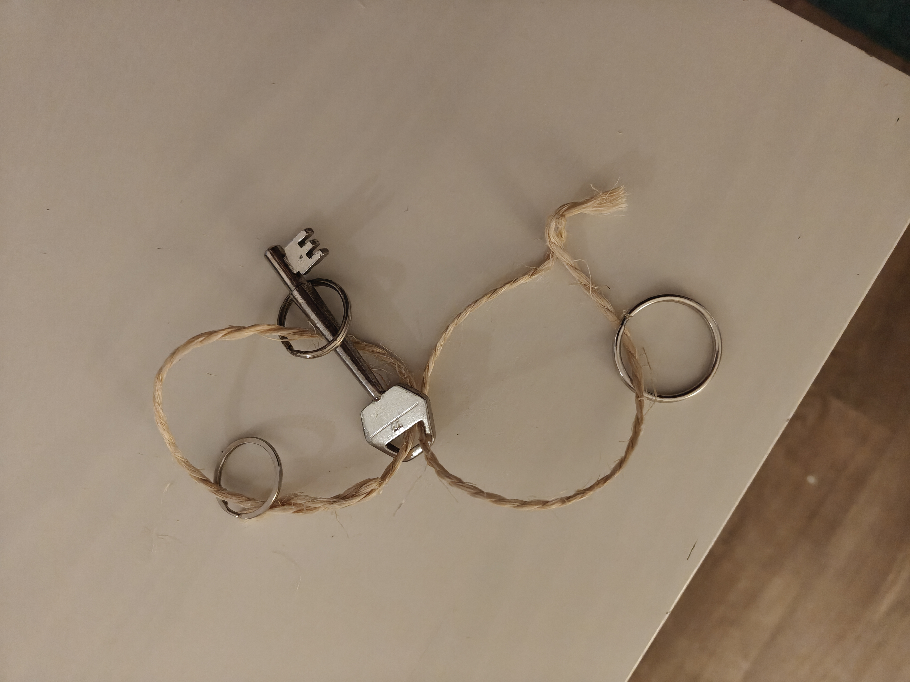
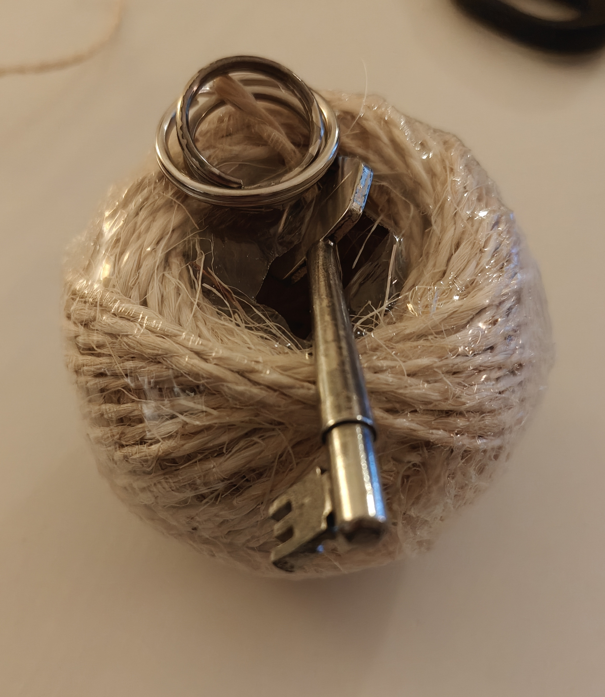

09-03-2026
Programming is my job, my hobby and something I really enjoy doing. After being absent from the previous lecture
I had to start thinking of what could be a good metaphor for programming and how I could even start with visualizing this.
It took some time but eventually I went to my junk drawer and just grabbed some rope and started playing around.
I think the beauty of metaphors is that it can be anything and it's the meaning you place on objects that makes the picture.

This simple piece of rope I view as an empty script. It has a start, an end, and does nothing. It can hold different elements and does not return anything.

I looked around the room and decided these rings for keychains would be perfect for functions. Functions are pieces of code that return something and then continue the program. Rings similarly have circular shapes, thus returning back to the program and allowing the rest to be executed.

Variables are pieces of code that hold a value. They can be used in the program and can be changed. I thought a key would be a good representation. I took my basement key and used it for the metaphor. Here the variable can be intertwined with the different functions. It first however needs to be initialized, which is why it's connected at the start of the program.

Loops are pieces of code that repeat a certain amount of times. I tied the rope into a loop, where the knot represents a while(true) loop. This loop will repeat infinitely. This is however something I could also see as the knot itself being the boolean. While it is tied it keeps looping, but as soon as I untie it the loop will stop.

Similarly the loop can also hold code. This is a real-time program and could for example be a simple game. Here the program is running infinitely, and the rings represent the different functions that are being called.

Another aspect of programming is that you never invent the wheel. You always use other code blocks through uses of dependencies or other code calls. Here I wanted to represent one piece of code calling another piece of code through a function. The ring, which represents the function, goes through both the loop and the untied piece of rope.

Sometimes programs need to share variables which is where the keyhole sharing between ropes comes in. This could for example be a game state that is used in a different function, but the loop keeps the main reference to the variable.

While uncommon, sometimes two loops work together in a program. This is sometimes called threading, where two loops run at the same time and can share variables. Here I have two loops that are intertwined with each other, sharing the same variable and each outputting different code and having different functions. They still work together to form a whole.

Now this is a complex program. Maybe it could be something like AI, which requires uncountable different processes to work together to generate an output. It still has a start but it's almost a black box of what is happening. Some functions and variables are public which the user interacts with, but most happens inside that black box.